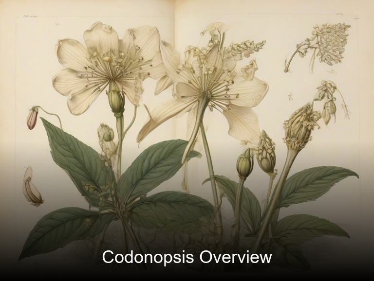
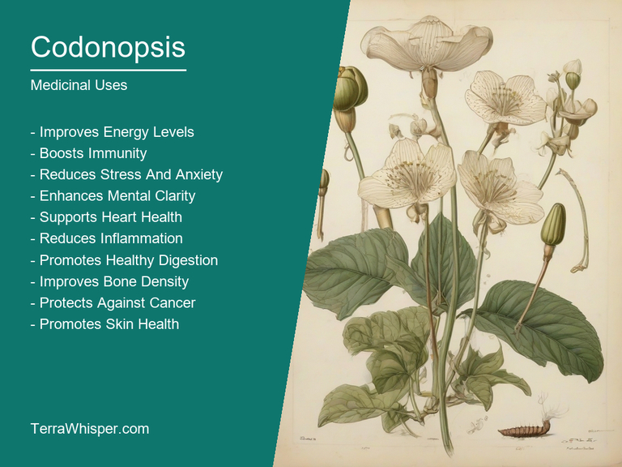
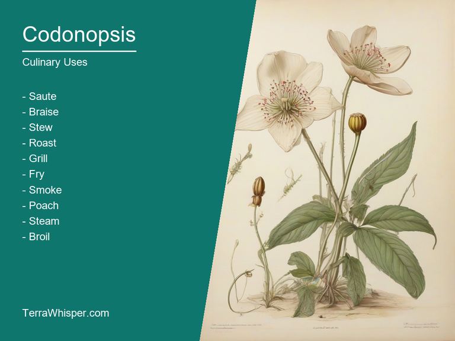
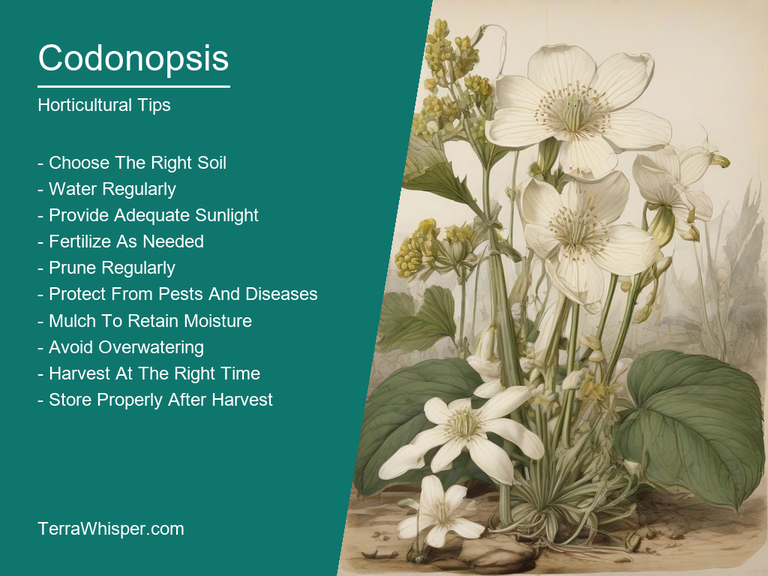
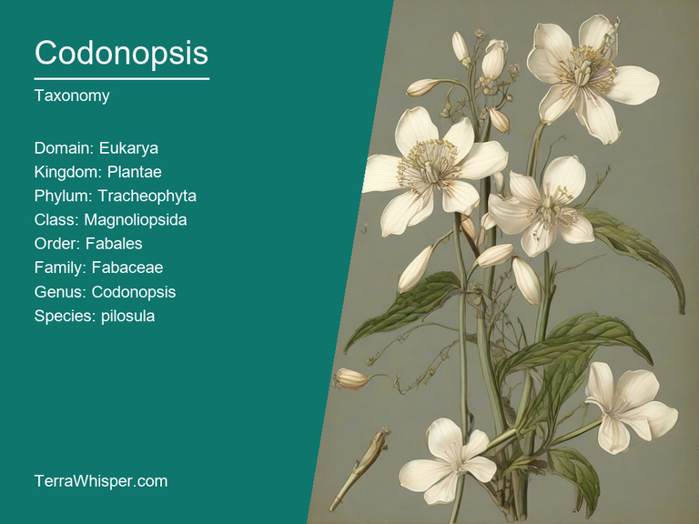
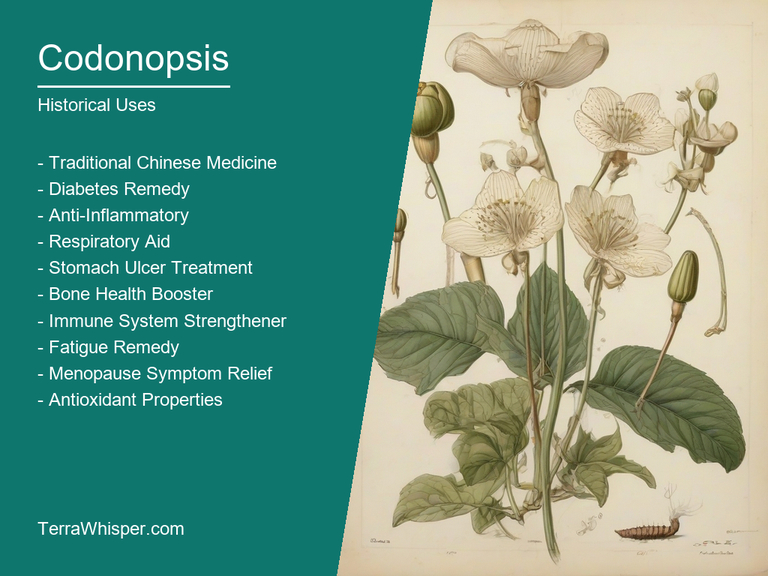

Codonopsis, scientifically known as Codonopsis pilosula, is a medicinal herb commonly used in traditional Chinese medicine for its various health benefits. It possesses several nutritional values, including being rich in minerals such as magnesium and calcium, which are essential for bone strength. In addition to its medicinal properties, Codonopsis can also be utilized as a culinary component, often added to soups and broths. It imparts a sweet taste while cooking without affecting the dish's overall flavor profile.
Horticulturally speaking, Codonopsis is a hardy perennial flowering plant native to various parts of Asia, specifically China, India, Japan, and Korea. The plant features delicate pink or white blooms and a strong upright habit which gives it an attractive appearance in gardens. It thrives well in shaded areas and tolerates different soil conditions but prefers well-drained, fertile soils.
Codonopsis pilosula, popularly known as 'Bian Caokun,' has a rich history associated with traditional Chinese medicine dating back several centuries. The plant is mentioned in various ancient texts, where it is regarded as having health benefits for treating conditions such as coughs, sore throat, bronchitis, and digestive problems. As a botanical species, Codonopsis pilosula belongs to the Campanulaceae family, sharing its genetic lineage with other plants like Lobelia and Campanula.
In this article, you will discover what are the medicinal and culinary uses of codonopsis. Then, you'll learn how to cultivate it, what is its botanical profile, and how it was used historically.
Codonopsis (Codonopsis pilosula) has many health benefits, making it a popular choice for natural healing remedies in various parts of the world. Its wide range of advantages includes supporting the immune system, promoting digestive health, and easing respiratory issues like coughs and colds. Additionally, Codonopsis exhibits properties that may help regulate blood sugar levels, improve energy, and enhance overall well-being.
The following illustration lists the most important uses of codonopsis in medicine.

The medicinal constituents responsible for these benefits include triterpene saponins, polysaccharides, amino acids, minerals, and vitamins such as Vitamin C. These components work synergistically to address several physiological concerns while offering an all-natural approach to wellness.
Both roots and tubers of the Codonopsis plant are utilized for medicinal purposes. Roots are traditionally processed into tea, tinctures, or capsules for internal use, while the tuberous parts can be steamed, sautéed, or pickled in recipes. This versatility allows for incorporation into various dietary regimens and herbal formulations, expanding the applications of this powerful plant.
Some individuals might experience potential side effects when using Codonopsis (Codonopsis pilosula) extensively or incorrectly. These side effects are generally mild and may include gastrointestinal distress, such as diarrhea or abdominal discomfort, headaches, and dizziness in rare cases. People with certain pre-existing medical conditions should consult their healthcare provider before incorporating Codonopsis into their wellness routine to ensure its safety and compatibility.
To optimize the health benefits of Codonopsis while minimizing risks, it is crucial to follow proper dosage recommendations. The typical dosage for adults usually falls within 2-6 grams per day in powdered form or 10-30 ml per day in liquid extracts. As always, start with lower doses and gradually increase as needed based on individual tolerance and response. Additionally, individuals with underlying health conditions should consult their healthcare provider before beginning a regimen to ensure compatibility with any medications they may be taking.
Codonopsis (Codonopsis pilosula), also known as Chinese Codonopsis, is widely used in Asian cuisines. It serves as a versatile ingredient offering distinct benefits to various dishes. This herb can be utilized in soups, broths, stews, and stir-fries for added depth of flavor, improving texture, and contributing to a healthy, well-balanced meal.
The following illustration lists the most common uses of codonopsis for culinary purposes.

The flavor profile of Codonopsis is mildly sweet and slightly bitter with earthy undertones. Its unique taste can enhance the natural flavors in various dishes while providing a delicate balance between sweetness and bitterness. This makes it an ideal ingredient for complementing savory or spicy meals, contributing to their overall harmony and depth of flavor.
The edible parts of Codonopsis include its roots, stems, and leaves. These parts can be utilized in cooking due to their nutritional value and culinary properties. When preparing the herb for use, care must be taken as they might contain some hair-like structures that need to be removed for the sake of taste and texture.
To maximize the benefits of Codonopsis in cooking, a few key tips can be followed. First, chop it finely to distribute its flavors evenly throughout the dish. It's essential to add the herb toward the end of the cooking process as overcooking may diminish its unique taste and reduce overall efficacy. Additionally, pair Codonopsis with other ingredients that complement its flavor profile for a more harmonious outcome in your culinary creations.
While Codonopsis is generally considered safe for consumption, it's important to note that some individuals may experience mild side effects or allergic reactions. It is advisable to consult with a professional dietitian or nutritionist before incorporating Codonopsis into your regular meals, especially if you have any specific health concerns or food sensitivities. Furthermore, avoid using it in excess, as this may potentially lead to toxicity or unintended consequences.
Codonopsis pilosula, also known as Buddleja or Nianghu in traditional Chinese medicine, is a perennial flowering plant belonging to the Campanulaceae family. If you wish to cultivate this beautiful species in your garden, follow these steps. Firstly, select a suitable location with partial shade and good drainage of about six hours of sunlight daily. Secondly, prepare the soil for cultivation by mixing organic matter such as compost or well-rotted manure into the existing soil. Thirdly, sow the seeds directly into the prepared soil or plant young seedlings in late spring to early summer with proper spacing between plants.
The following illustration lists the most important tips to cutlitvate codonopsis.

Ideal growing conditions are essential for a healthy and thriving Codonopsis pilosula plant. The optimal temperature range should be within 5°C to 30°C, providing ample air circulation throughout the season. The soil pH level must fall between 6.0 and 7.5, ensuring proper nutrient uptake for healthy growth. In terms of watering, maintain a consistent moisture level but avoid over-saturation, as this may cause root rot issues in wet soil conditions. Lastly, fertilization should be done sparingly with a balanced or nitrogen-rich fertilizer to promote flowering and overall plant health.
Maintenance is vital for the long-term success of Codonopsis pilosula cultivation. Regular weeding will keep unwanted plants away, prevent competition for resources, and enhance air circulation around the roots. Pruning should be done in late winter or early spring to remove any dead or damaged branches and promote new growth. Monitoring pests and diseases is also essential; common issues include aphids, slugs, and fungal diseases like powdery mildew. Employing natural methods such as companion planting with insect-repelling plants can help minimize these concerns, enabling the successful development of this remarkable plant in your garden.
Codonopsis, with botanical name Codonopsis pilosula, belongs to the domain Eukaryota and is a part of the Plantae kingdom, the Magnoliophyta division, the Magnoliales order, the Campanulaceae family, and the Codonopsidium genus. It has various common names like Butterfly weed, Chinese Codonopsis, and Niannan Codonopsis.
The following illustration display the botanical profile of codonopsis.

The variants of Codonopsis pilosula include Codonopsis lanceolata, which differs by its more slender leaves and larger flowers. It often lives in the same habitats but may have a slightly different distribution. Another variant is Codonopsis tangshen (aka Tang-Shen), primarily recognized due to smaller-shaped blossoms, usually with white or pink colors.
Codonopsis pilosula grows up to about one meter tall and features square stems, opposite leaves, and large bell-shaped flowers. Its flowers are typically white, purple, or pink in color and have a sweet fragrance. The plant can grow both as an annual and perennial depending on the climate conditions.
Codonopsis pilosula is native to Asia, particularly China, Japan, and India, though its specific distribution varies among the different variants. It prefers mountainous regions with partial shaded environments. This plant can be found growing in grasslands and rocky areas at elevations between 100 and 3,500 meters above sea level.
Codonopsis pilosula has a biennial life cycle, meaning it takes two years to complete its full lifespan. In the first year, it grows leaves and stems only as seedlings; in the second year, it flowers, reproduces seeds and then dies off. This plant serves a critical role in pollination by attracting various butterfly species.
The etymology of "Codonopsis" originates from ancient Greek words 'KOδON', meaning knot or tie and '-PODI(S)', which implies -related to a foot, thus the term Codi-poda would denote any type resembling feet. This name was given due its tubular growth shape on many stems it can take similar appearance as if having multiple 'feet'. The genus "Codonopsis" belongs under family Campanulaceae and is native to Asia, primarily in regions like Himalayas ranging from Afghanistan down through China all the way over Eastern part of India. In spite being closely related species-wise with other plants such Lobelia, Gynoxys etc., its name distinguishes it apart based on unique characteristics that define 'Codonopsis'.
The following illustration lists the most well known historical uses of codonopsis.

With profound cultural significance in Asia and especially for traditional Chinese medicine where Codonopsisa pilosula serves both as a tonic herb helping to strengthen the body's qi (energy) system while also providing nourishment necessary during pregnancy due its reputed benefits on fetal development. Additionally, this medicinal plant has been known traditionally in some communities around world where it was regarded more than just healing but spiritual aspects associated which brought further significance into daily life practices related to wellbeing of mind and body as whole entity being connected by invisible threads (knots) like what 'Codonopsis' suggests symbolically.
Throughout history, there are numerous mythological stories regarding plants often reflecting upon beliefs around their powers; likewise tales revolving Codi-poda species were also part of folklore in various cultures where they played significant roles ranging from guardianship over sacred sites to being involved within certain legends linked directly with gods or heroes foundations. One such story originates from ancient India, involving sage Vishwamitra seeking assistance through divine intervention by pleading goddess Ushas for aid who agreed but had her own conditions which included tying the knot (representing Codonopsis) among specific trees as part of ritualistic process.
The presence and references to 'Codi-poda' species can be traced in ancient writings through philosophical texts like those belonging Indian sage Patanjali's yoga teachings where he talks about balancing different energies within body using various meditation practices relying partially upon understanding nature at their roots too; while these ideas might not have been developed only based on codonopsis but it certainly had an influence over how people perceived its role as well beyond mere medicinal applications.
Lastly, aside from both curing physical ailments and symbolizing deeper meaning through myths & legends mentioned earlier, folkloristic use has encompassed various aspects such like employing them in rituals associated with fertility or enhancing spiritual connection during meditation practices – making this simple herb not just another plant but rather an important cultural bridge link us today all the way back into our history's wisdom pool reflect upon how we once perceived nature as essential part of human life journey.